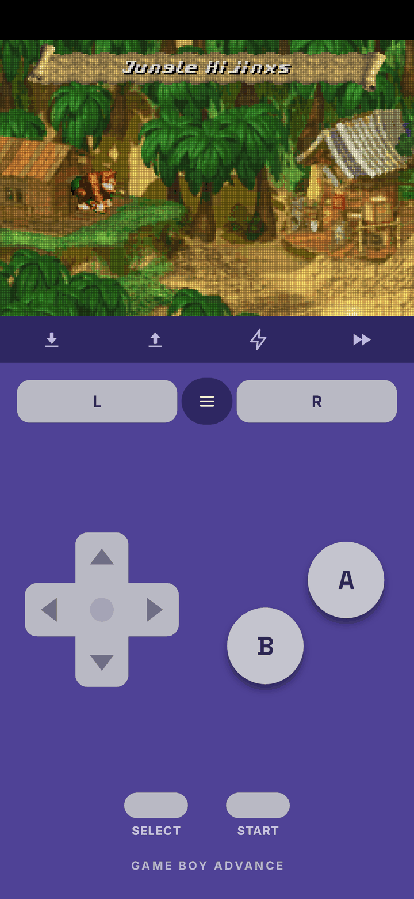
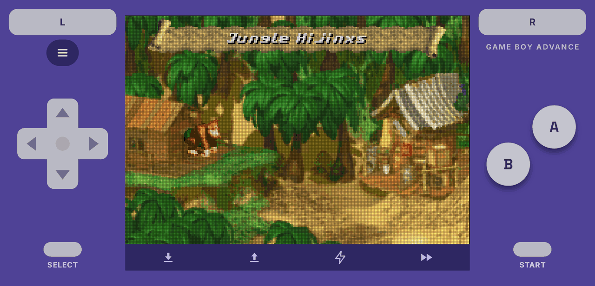
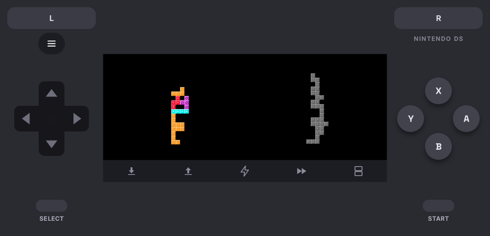

每台主机，都是卡带。
每台主机都有自己的页面，游戏显示在各自的卡带上。随时可以切换成封面或列表。
展示的游戏均为虚构，仅作示意。它们并不是这些主机上的真实游戏，其美术图像由 AI 生成。
每台主机一个手柄。
在安卓上，每台主机都有自己的屏幕手柄，竖屏横屏都可以。连接实体手柄后它会自动让开。



展示的游戏均为虚构，仅作示意。它们并不是这些主机上的真实游戏，其美术图像由 AI 生成。
Android 8 或更新版本，64 位（arm64）。Android 应用是 RetroArch 的分支，因此采用 GPLv3 许可；源代码在 openemux-android。
每款游戏都在它所属主机的卡带上
在卡带视图中，你添加的游戏会以标签图案显示在所属主机的卡带上。下面的卡带就是这种视图的示例。
安装
提供 Debian、Ubuntu 和 Fedora 的软件包，以及 AppImage、Flatpak、Windows 安装程序和 Android 的 APK。首次启动时，其余的由 OpenEmux 完成设置。
Linux
任意发行版
chmod +x OpenEmux-x86_64.AppImage
./OpenEmux-x86_64.AppImage没有 FUSE？在命令前加上 APPIMAGE_EXTRACT_AND_RUN=1。
Debian / Ubuntu
sudo apt install ./openemux_*_amd64.deb需要 Ubuntu 24.04 LTS 或更新版本。
Fedora
sudo dnf install ./openemux-*.x86_64.rpm需要 Fedora 40 或更新版本。
沙盒运行，自动更新
flatpak install -y flathub org.libretro.RetroArch
flatpak remote-add --if-not-exists --no-gpg-verify \
openemux https://guilhermefeitosa66.github.io/openemux-flatpak/repo
flatpak install -y openemux io.github.guilhermefeitosa66.OpenEmux通过 flatpak update 获取更新。Releases 页面也提供单文件
.flatpak 包。
Windows Beta
两种版本都自带 GTK 4、Python 运行时和 RetroArch 本身，无需另外安装 任何东西。支持 64 位 Windows 10 或 11。Windows 版刚刚推出——如果遇到问题，请提交 issue。
常规方式
OpenEmux-*-setup.exe仅为当前用户安装，因此不会弹出管理员权限提示。 目前版本尚未进行代码签名：SmartScreen 会发出警告，点击更多信息 → 仍要运行即可 继续。
无需安装
OpenEmux-*-windows-x86_64.zip解压到任意位置，然后运行 OpenEmux.exe（位于其中的
OpenEmux\ 文件夹）。适合放在 U 盘里，或在无法安装软件的电脑上使用。
Android
APK 暂未上架 Play 商店：请从 Releases 下载，并在 Android 提示时允许浏览器或文件管理器安装应用。需要 Android 8 或更新版本，64 位。
安装 APK
OpenEmux-mobile.apk打开下载的文件并确认。更新也用同样的方式，覆盖安装在旧版本之上。
等待下载核心
首次打开时，应用会下载模拟器核心。然后通过“导入”添加 ROM，或把它们放到手机的 Android/data/com.openemux.mobile/files/roms。
校验你的下载
每个版本都附带一个 SHA256SUMS 文件。把它放在你下载的文件旁边，
然后运行：
sha256sum -c SHA256SUMS --ignore-missingOK 表示文件与发布的版本完全一致。
其他任何结果都说明文件已损坏或被篡改——请不要运行它。
在 Windows 上，PowerShell 会输出哈希值，请用肉眼将它与
SHA256SUMS 中对应的那一行进行比对：
Get-FileHash .\OpenEmux-*-setup.exe -Algorithm SHA256更喜欢自己构建？
make bootstrap && make run——请参阅构建说明。
其他一切
基于 RetroArch
在底层负责模拟的是 RetroArch。它功能强大，但对只想玩游戏的人来说，它的菜单和设置可能有些复杂。OpenEmux 处理它周围的事情：整理你的游戏、下载核心、设置按键和着色器。
你的游戏，按主机分类
你添加的游戏会按主机分组，封面从 libretro 缩略图库下载。
首次启动即可使用
第一次打开时，OpenEmux 会创建配置并下载你的主机所需的核心，通常大约十秒。其余的会在后台继续下载。
每台主机单独的按键设置
在一个面板里为每台主机设置键盘和手柄按键。游戏启动时，OpenEmux 会把它们交给 RetroArch。
每台主机单独的着色器
从一份简短的列表里为每台主机选择 CRT 或扫描线着色器，不用去翻 RetroArch 的着色器菜单。
BIOS 清单
显示每台主机需要哪些 BIOS 文件、你已经有哪些，避免因为缺少文件而让游戏悄无声息地无法启动。
Linux 优先
Linux 是 OpenEmux 的主要平台。应用使用 GTK4 和 Adwaita 构建，遵循 GNOME 设计规范，每一处改动都先在 Linux 上测试。同时也支持 Windows，目前仍是测试版。
每个主机都有自己的手柄
31 个主机各有一套屏幕手柄，按原版手柄的样子绘制，竖屏和横屏都能用。画面下方的按钮栏可以存档、读档、开启连发和加速游戏。
卡带与封面
游戏可以显示为带标签的卡带，也可以显示为封面或列表。货架可以按你喜欢的顺序排列。
下载一次即可开玩
应用不自带核心：首次打开时，会从 RetroArch 的 buildbot 下载所有主机的核心，以及 PSP 和 GameCube 需要的系统文件。
也支持游戏手柄
连接手柄后，屏幕手柄会让开，游戏占满整个屏幕，菜单也能用方向键和按键操作。
浅色与深色
跟随手机主题，或在设置中选择。
八种语言
与桌面版相同的语言，跟随手机或在设置中选择。
RetroAchievements
在设置中登录一次，每个游戏都会在你的 RetroAchievements 个人资料上解锁成就，也可以开启硬核模式。
玩你拥有的游戏
OpenEmux 是 RetroArch 的前端，让只想玩游戏的人不必先学会 RetroArch 的菜单。它不是游戏来源：不附带任何游戏、ROM 或 BIOS 文件，将来也不会。
- 只使用你合法拥有的内容。自行提取你的卡带和光盘，或使用 你购买的游戏的备份。
- 本项目不是为盗版而生。在大多数国家，下载你并不拥有的受版权保护的游戏 都是违法的。
- 模拟有助于保存历史。 游戏的许多美术、音乐和设计都依存于日渐老化的硬件。让它们保持可玩是值得的，而尊重制作这些游戏的人，才能把这件事做好。
31 个系统
每个系统都使用 RetroArch 自己的核心运行，并在 OpenEmux 中拥有各自的封面、按键和着色器设置。
受 OpenEmu 启发，由 RetroArch 驱动
OpenEmux 受 macOS 模拟器前端 OpenEmu 启发。OpenEmu 只能在 macOS 上运行，所以 OpenEmux 尝试在 Linux 上，现在也在 Windows 上，提供类似的体验。它不是 OpenEmu 的分支，也不共享任何 OpenEmu 的代码：这是一套用 Python、GTK 4 和 libadwaita 编写的独立代码，模拟本身来自 RetroArch 和 libretro 项目。主机图标是 OpenEmu 的美术作品，依照 OpenEmu 的 BSD 许可证署名。Android 应用是独立设计的（手机上并没有 OpenEmu）。OpenEmux 与 OpenEmu Team 没有隶属关系，也未获其认可。没有这些项目的付出，这一切都不会存在。❤️
OpenEmux 是自由软件
它可以免费使用，代码以 MIT 许可证开放。如果你想帮忙，随时欢迎错误报告、翻译、代码和想法。在 r/OpenEmux，你可以寻求帮助、分享你的设置，或者关注正在进行的工作。